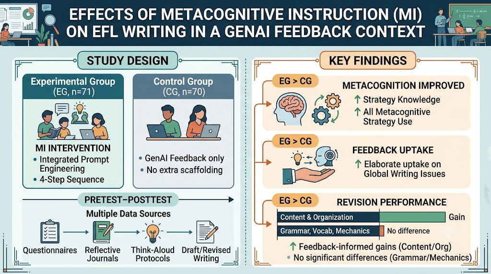

Metacognitive instruction to enhance EFL writers' metacognition, feedback uptake, and revision performance in a GenAI-assisted feedback context
Web view·Postprint archive
Bibtex
@article{yan_injal_2026,
author = {Da Yan},
title = {Metacognitive instruction to enhance EFL writers' metacognition, feedback uptake, and revision performance in a GenAI-assisted feedback context},
booktitle = {International Journal of Applied Linguistics},
year = {2026},
}